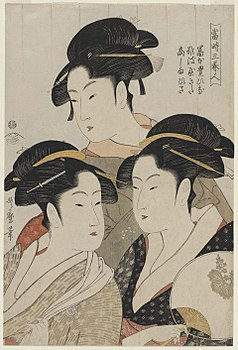

Tres bellezas de nuestro tiempo
Introducción
Tres bellezas de nuestro tiempo (人人 (Tōji San Bijin?) ) es una xilografía al estilo nishiki - e del dibujante Japonés Kitagawa Utamaro, publicada por primera vez entre 1792 y 1793, durante el período Edo de la historia japonesa.
La composición, que mide 37,9 cm × 24,9 CM, representa (como se puede deducir del título) tres famosas bellezas de la época: son la geisha Tomimoto Toyohina y las doncellas Naniwa Kita y Takashima Hisa.
|